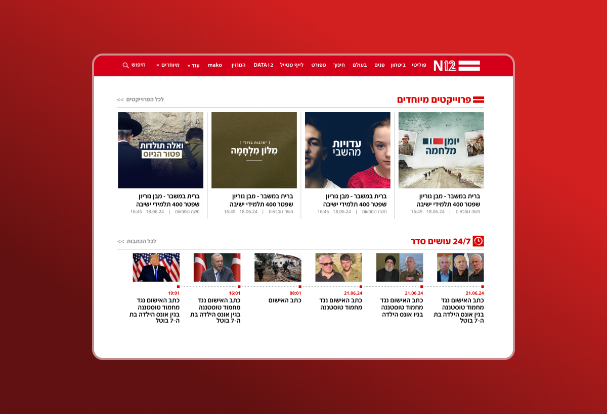

This frame matches the site's existing landscape images well — real case-study screenshots can go straight in without cropping.
Components
Reusable device frames — drop any image into the screen slot. Scroll down to see each one tilt into place.
Phone

iPhone
Android
Note: this is a placeholder crop (the site's existing images are wide landscape graphics, not portrait screenshots). Swap the <img> source for a real portrait screenshot to use this for real. The clock in the status bar is live — it always shows the current time (iPhone: 12h, Android: 24h).
Desktop
This frame matches the site's existing landscape images well — real case-study screenshots can go straight in without cropping.